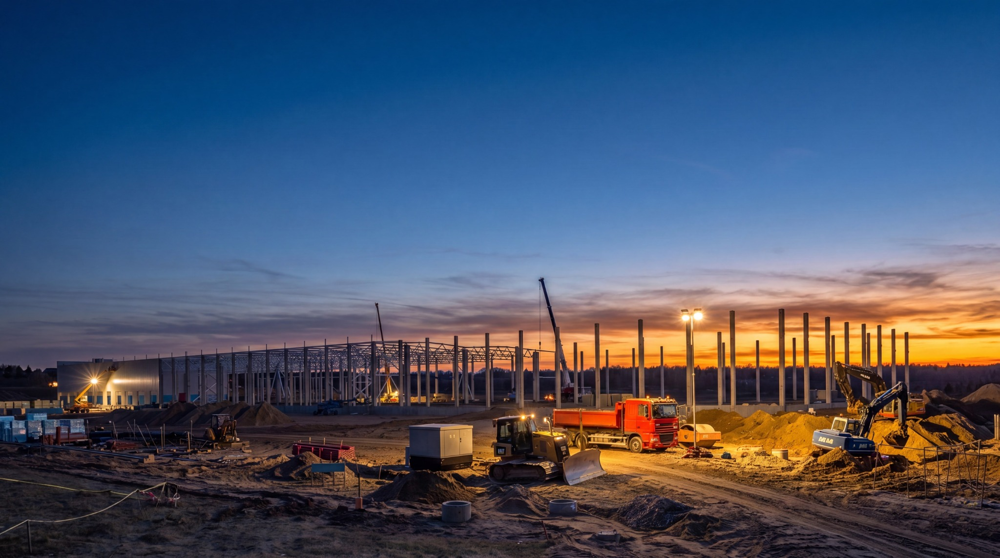
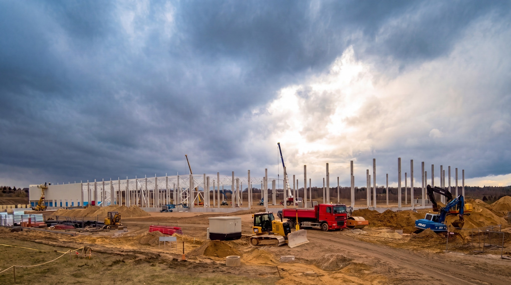
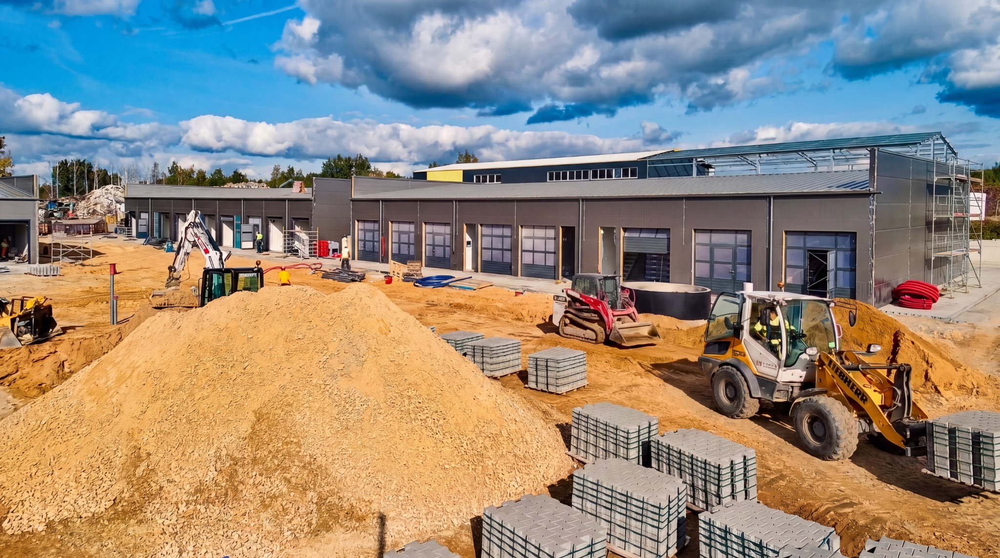
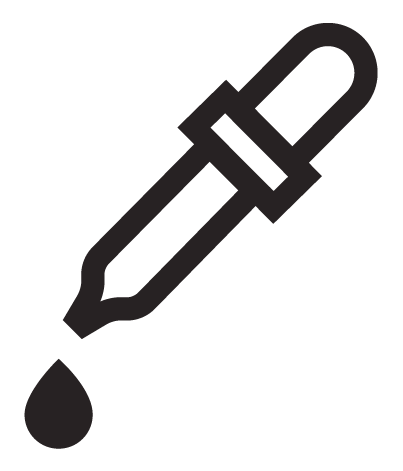

VIDEO LAB / VIZUALINIO TURINIO PARTNERIS
Vaizdas, kuris
kuria vertę.
Vizualinio turinio sistemos projektams, įmonėms ir produktams.

TRYS KRYPTYS. VIENAS PARTNERIS.
Nuo sumanymo iki galutinio vaizdo01Projektų stebėsena
Projekto eiga, archyvas ir galutinis filmas.nuo 10 500 € / 12 mėn.↗
Ilgalaikė vizualinė dokumentacija su „Enlaps“ ir „myTikee Monitor“. Projekto pokyčiai tampa medžiaga komunikacijai ir jo istorijai.
Konkreti įrangos, filmavimų ir galutinio turinio apimtis suderinama pasiūlyme. Tai nėra apsaugos ar techninės priežiūros paslauga.
Aptarti stebėseną ↗02Periodinis turinys
Nuosekli įmonės komunikacija.nuo 4 200 €/mėn.↗
Planavimas, periodiniai filmavimai ir turinio adaptavimas jūsų komunikacijos kanalams.
Filmavimų dažnį, formatų skaičių ir bendradarbiavimo laikotarpį nustatome pagal komunikacijos poreikį.
Aptarti turinio sistemą ↗03Produkto video
Produkto pristatymas ir kampanijos.nuo 3 000 €↗
Nuo kūrybinės krypties iki produkto filmo ir sutartų jo formatų. Vaizdas kuriamas pagal produkto savybes bei kampanijos tikslą.
AI gali būti gamybos proceso dalis. Filmavimas, scenografija ir papildomi specialistai derinami pagal užduotį.
Aptarti produkto video ↗Pirmiausia – vaizdas.
Projektų kadrai ir kūrybinės kryptys
Įmonės ir produkto vaizdai – AI sukurtos vizualinės koncepcijos, ne klientų projektai.
PROJEKTŲ STEBĖSENA / ENLAPS + MYTIKEE MONITOR
Laikas keičia projektą.
Vaizdas išsaugo eigą.
„Tikee“ kameros ir „myTikee Monitor“ sujungia projekto archyvą, nuotolinę peržiūrą, dalijimąsi ir privatumo priemones.
Išbandykite dienos ir vakaro kadrų palyginimą. Tai demonstracija su pateiktais kadrais.
Visos stebėsenos galimybės ↓
DIENAVAKARASTIKEE KAMEROS + MYTIKEE MONITOR
matykite eigą.
dalinkitės rezultatu.
Ilgalaikio projekto vaizdai naudingi nuo pat darbų pradžios. Kartu suderiname, ką fiksuoti, kas turės prieigą ir kokį turinį paruošime komunikacijai.

NUO OBJEKTO IKI JŪSŲ KOMANDOS
- 01Fiksuojame su „Tikee“
- 02Kaupiame „myTikee“ debesijoje
- 03Paruošiame dalijimuisi ir filmui
01Peržiūra iš bet kur
+
Naujausi persiųsti kadrai ir sukaupta projekto istorija pasiekiami naršyklėje. Patogu peržiūrėti objektą tarp vizitų.
Atnaujinimas priklauso nuo sutarto fotografavimo, siuntimo grafiko ir ryšio. Tai nėra nuolatinė tiesioginė transliacija.
02Pokyčių palyginimas
+
Du laikotarpiai slankikliu, greta arba su vaizdų perdanga padeda parodyti, kaip keičiasi projektas.
Išbandyti kadrų palyginimą ↑03Timelapse ir komunikacija
+
Debesijoje iš kadrų kuriamos timelapse sekos. „Video Lab“ atrenka medžiagą ir pagal sutartą apimtį paruošia turinį projekto komunikacijai bei galutinį filmą.
Platformos generavimo galimybės nereiškia neriboto individualaus montažo.
04Prieiga komandai ir partneriams
+
Numatytiems gavėjams galima suteikti apsaugotą peržiūrą. Viešinimui paruoštą kadrą, galeriją ar timelapse galima įterpti į projekto svetainę.
Privatus dalijimasis ir vieša peržiūra derinami atskirai. Kelių kamerų peržiūra galima pagal pasirinktą konfigūraciją.
05Privatumas nuo projekto pradžios
+
„myTikee“ leidžia automatiškai sulieti atpažįstamus žmones, o fiksuotoms jautrioms vaizdo zonoms pritaikyti maskavimą.
Suliejimą numatome prieš pradedant siųsti kadrus. Viešinimui parenkame apdorotą peržiūrą ir patikriname rezultatą.
Kaip tai veikia ↓06Techninė stebėsena
+
Platformoje matoma kameros baterija, ryšys, vieta kortelėje ir paskutinio vaizdo įkėlimas. Tai padeda prižiūrėti ilgalaikį fiksavimą.
Būsena atitinka paskutinį kameros prisijungimą. Projekto priežiūros ir reagavimo tvarką sutariame pasiūlyme.
PRIVATUMO PRIEMONĖS
Ką svarbu sutarti iš anksto?
Automatinis suliejimas taikomas naujiems vaizdams po funkcijos įjungimo. Debesijoje išlieka ir originalų peržiūra, todėl atskirai nustatome prieigas, saugojimo laiką ir viešinimo tvarką. Suliejimas padeda įgyvendinti privatumo reikalavimus, tačiau savaime negarantuoja viso projekto atitikties BDAR.
Papildomos galimybės pagal projektą +
Trumpa „Live“ peržiūra, pažangesnė AI analizė, kelių objektų apžvalga ir duomenų perdavimas į kitas sistemas derinami patikrinus kameros modelį, ryšį, prenumeratą ir konkrečią apimtį. Šios funkcijos automatiškai neįtraukiamos į pradinę kainą.
nuo 10 500 € / 12 mėn.
Kamerų skaičius, prieiga, saugojimas ir turinio apimtis – individualiame pasiūlyme.
MAŽA KOMANDA. AIŠKI ATSAKOMYBĖ.
Vienas kontaktas.
Bendra kryptis.
Su jumis nuo pirmo pokalbio iki galutinio rezultato dirba vienas atsakingas partneris. Pagal projekto poreikį pasitelkiami papildomi kūrybos ir gamybos specialistai.
- 01
Suprantame užduotį
Tikslas, auditorija, kanalai ir numatoma apimtis.
- 02
Suderiname planą
Kūrybinė kryptis, gamyba, terminai ir biudžetas.
- 03
Sukuriame turinį
Nuo kadrų atrankos iki paruoštų naudoti formatų.
KOKIĄ ISTORIJĄ KURSIME?
Aptarkime
jūsų projektą.
Pasirinkite kryptį ir trumpai aprašykite poreikį.